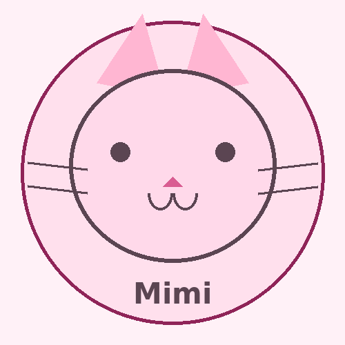

Badan Eksekutif Mahasiswa
Departemen Agama dan Sosial
Berpartisipasi dalam kegiatan organisasi, kegiatan sosial, serta program yang mendukung kebersamaan dan kontribusi mahasiswa.

Aspiring Web Developer · Designer · Content Creator
Mahasiswa Informatika yang tertarik pada pengembangan web, desain digital, editing video, dan pembuatan konten kreatif.
01 / CONTACT
02 / ABOUT
Saya adalah mahasiswa Informatika yang senang menggabungkan teknologi dengan kreativitas. Saya memiliki minat pada web design, HTML, CSS, desain visual, video editing, dan content creation. Saya juga terus mengembangkan kemampuan agar dapat membuat pengalaman digital yang sederhana, menarik, dan mudah digunakan.
03 / EDUCATION
Sedang ditempuh
Institut Teknologi Del
Fokus pada pengembangan kemampuan teknologi informasi, pemrograman, dan pengembangan solusi digital.
04 / EXPERIENCE
Badan Eksekutif Mahasiswa
Berpartisipasi dalam kegiatan organisasi, kegiatan sosial, serta program yang mendukung kebersamaan dan kontribusi mahasiswa.
Personal Project
Merancang konsep website jasa AI dengan pendekatan visual cute, responsive, dan user-friendly.
05 / PROJECTS